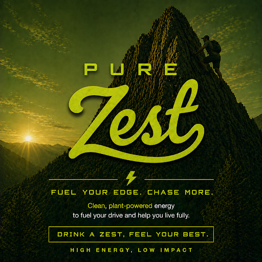

Introducing Pure Zest Energy Drinks—the ultimate fusion of vibrant flavor and unstoppable energy. Crafted for those who crave a refreshing boost without compromise, Pure Zest delivers bold, natural tastes paired with a powerful energy blend to keep you at your best. Whether you’re gearing up for a workout, powering through a busy day, or looking for a delicious pick-me-up, Pure Zest provides clean energy and invigorating flavors in every can. Experience the difference with Pure Zest—where pure ingredients meet pure energy.
Zest exists to fuel everyday life with clean, plant-powered energy that is refreshing the body, sharpening the mind, and honoring the planet in every sip. We believe energy should never come at the earth’s expense, which is why we craft every drink with sustainably sourced ingredients, mindful production, and a commitment to reducing environmental impact. Zest is more than a boost, it’s a movement toward a more conscious, vibrant, and energized way of living.